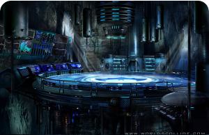
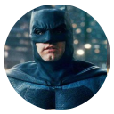
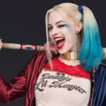
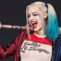

BATMAN
Bruce Wayne es el único personaje que se identifica como Batman y aparece en Batman, Detective Comics, Batman y Robin y Batman: The Dark Knight. Dick Grayson vuelve al manto de Nightwing
Ver más 
